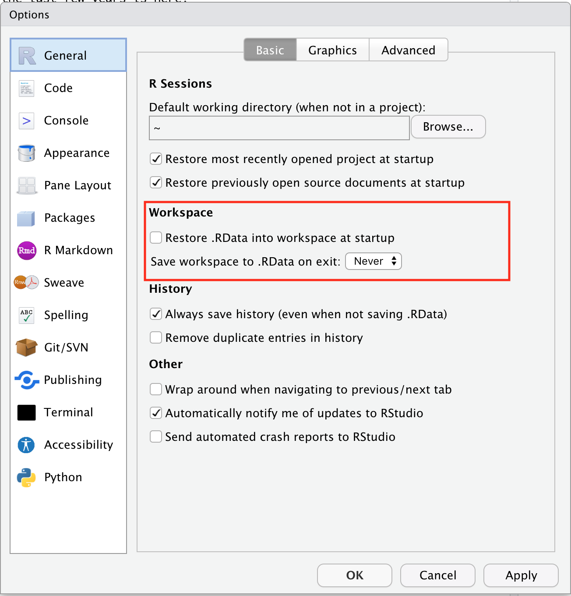
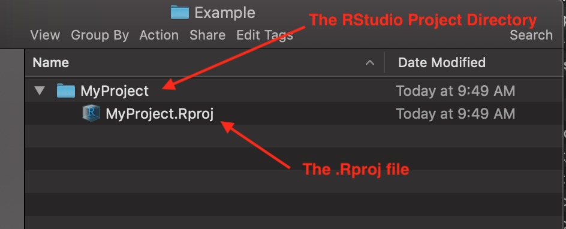

Session 3 Organizing Research Projects for Reproducibility
3.1 Goals for this session
- Learn strategies to make our research and particularly our data analyses reproducible.
- Reproducible here means that we can
- easily send someone a directory filled with data and scripts, and
- it is nearly effortless for that person to re-run your entire analysis, regenerating all of your results, figures, and tables, and
- it is clear what all the different files and parts of your analysis project are, and the order that they must be run in.
- there is no part of the analysis that is done “by hand.” (i.e., no data formatting is done by copying and pasting columns of data in Excel.)
- The focus here is on using RStudio for make usefully reproducible projects within R.
The ideal we will be striving for is to be able to start from a raw data set and then write a computer program that conducts all the cleaning, manipulation, and analysis of the data, and presentation of the results, in an automated fashion.
3.2 Why do this?
Carrying out analyses in this way carries a number of advantages to the researcher:
- Newly-collected data can be integrated easily into your analysis.
- If a mistake is found in one section of your analysis, it is not terribly onerous to correct it and then re-run all the downstream analyses.
- Revising a manuscript to address referee comments can be done quickly.
- Years after publication, the exact steps taken to analyze the data will still be available should anyone ask you how, exactly, you did an analysis!
- If you have to conduct similar analyses and produce similar reports on a regular bias with new data each time, you might be able to do this readily by merely updating your data and then automatically producing the entire report.
- If someone finds an error in your work, they can fix it and then easily show you exactly what they did to fix it.
Making research reproducible is good for the community:
- Others that would like to confirm your results can do so easily.
- Someone wanting to apply your methods to their own data can easily do so.
- Reproducibility makes it easier for everyone to learn more quickly from what their colleagues have done.
Finally:
- Most journals require, at a minimum, that the raw data used in a paper be publicly archived and accessible.
- Increasingly, journals require all the analysis code as well.
If you have emphasized reproducibility throughout your project, these last two are quite easy.
3.3 What can this look like?
Using R, RStudio and RMarkdown, and freely available tools and services such as git and GitHub, it is possible to publish a reproducible project “website” that is part of a GitHub repository that holds everything needed to reproduce all the results.
One example from a project I did in the last few years is here: https://eriqande.github.io/thompson-et-al-2020-chinook-salmon-migration-timing/index.html
It took a fair bit to put that together, but I find that I go back to it all the time to direct colleagues and others to the code for certain analyses.
3.4 Reproducibility Edict #1: Don’t Save Your R Workspace and then Reload It
R has a feature that lets you save your entire workspace, and then, at a later time, reload it so that you can keep working.
- Don’t do it.
- It is too easy to create R objects but not save the
code that produced them when saving and loading
.Rdata. - “Save the code, not the workspace.”
Also, in RStudio’s Global Options/Prefernces, make sure to disable automatic saving of your workspace in RStudio and never automatically load .Rdata when you open RStudio:

3.5 Paths, an important concept for reproducibility
- On your computer system, files can be stored inside directories.
- A file’s location relative to the root of your computer’s filesystem is called its absolute path.
For example, on Windows:
# the root is C:
"C:\Documents and Settings\Eric\My Documents\mydoc.txt"Or on Mac:
# the root is /
/Users/eriq/Documents/git-repos/merida-workshop-2022/merida-workshop-2022.RprojAbsolute Paths are, almost by definition, NOT reproducible. Everyone has their computer set up differently.
If I am trying to run a script that my friend, Devon, gave me, and one of his lines of code is:
read_csv("/Users/devon/Documents/stuff/data.csv")Then, that will not work for me. In order to make that work,
I would have to get the file data.csv separately, put the it somewhere
on my computer, and then change the line of code above to reflect
that file’s location on my computer.
What a hassle!!
3.6 The Working Directory
When R is running, it finds itself “stationed” in what is called the “working directory.” For any R session, at any time, that directory can be found with:
getwd()## [1] "/Users/eriq/Documents/git-repos/merida-workshop-2022"Everybody try that.
3.6.1 A Hugely Important Point!
When you open an RStudio project, the working directory is always automatically set to the Project Directory—that is, the directory that holds the .Rproj file.
If you have disabled automatic loading of the .Rdata file, then
the R environment will also be completely empty—a blank slate!—when
you open an RStudio project.
That is how every analysis should start.
3.6.2 Skeletal anatomy of an RStudio Project

- The Project is basically everything that is inside the Project Directory.
- The .Rproj file is just a text file listing a few preferences, but your operating system recognizes it as an RStudio file. So, when you double-click it, it will open the project up in RStudio. (This is a good way to open RStudio projects…)
3.7 Reproducibility Edict #2: Don’t Change Directories in Your Code
The companion function to getwd() is setwd() which lets you
change the working directory. Generally you almost never want to
use setwd() in your code.
3.8 Relative Paths
A relative path is a path that starts from the working directory. For example, if the
working directory contains a file called time-series.csv, then this will read it:
read_csv("time-series.csv")If the working directory holds a directory called data, inside of which
is a file called abundance.csv, then this will work:
read_csv("data/abundance.csv")3.9 Reproducibility Edict #3: Always Use Relative Paths from the Project Directory to Files inside the Project Directory
You should plan on having an RStudio Project for every project that you work on, where, roughly, a project correponds to the work undertaken for a paper, publication, thesis chapter, report, etc.
- Everything needed to reproduce the analysis should be included withing the Project Directory.
- Assume the working directory is the Project Directory.
- Reading files, use relative paths.
This way, the Project Directory has all the data and files needed to run the whole analysis.
You can just give an RStudio Project to someone and they can run everything without changing paths, etc.
# good
read_csv("data/abundance.csv")
read_csv("time-series.csv")
source("R/my-functions.R")
# bad:
read_csv("/Users/eriq/files/data/abundance.csv")
read_csv("C:/Documents and Settings/data/abundance.csv")
source("../../../useful_stuff/my-functions.R")Note, the last “bad” example above uses a relative path to a file that is outside of the Project Directory.
3.10 Reproducibility Edict #4: Put data files into a data directory
This data directory should be at the top level of the Project Directory.
3.11 Reproducibility Edict #5: Write Analysis Scripts as .R or .Rmd files
- These scripts/RMarkdown-documents/notebooks should be at the top level of the Project Directory
- These should be named with a leading number (I like three digits, like
001,002, etc.) that gives the order in which they should be executed.
Sometimes later scripts use, as inputs, outputs from earlier scripts, in which case the order that they are run in becomes paramount.
3.12 Download an example project to play with
At this juncture, let’s all download a simple RStudio project to play with. The project is at:
https://github.com/eriqande/small_project
You can either:
- navigate there with a browser, click the green “code” button and “Download ZIP”; then expand that zip archive into a single Project Directory.
When you have it, navigate into the small_project directory
and double click the small_project.Rproj file to open the project
in RStudio.
- if you have git, then you can open the project directly from RStudio using: File->New Project->Version Control->Git and then put:
https://github.com/eriqande/small_project.gitinto the Repository URL box.
3.12.1 Let’s have a moment
Take a moment to open up that project, and try to evaluate the notebooks:
001-read-and-format.Rmd002-plot-data.Rmd
Let’s discuss the structure of the project and have time for questions.
In particular let’s talk about the R Notebook format: a combination of explanatory text and code chunks that provides a way of cleanly documenting your findings.
3.13 Reproducibility Edict #6: Write your code with style!
R code is a lot easier to read when it is formatted in a consistent style. Your homework is to read the [Tidyverse Style Guide)[https://style.tidyverse.org/]. It takes about an hour and is extremely informative.
Following the guidelines in the style guide will make it easier for you (and others) to read and understand your code.
3.15 Reproducibility Edict #7: Use git for Version Control
RStudio provides one the cleanest, nicest interfaces, anywhere, for using git.
Instructions to install git can be found within the comprehensive online book, by Jenny Bryan, happygitwithr.
Accomplishing that with everyone in the short time we have would be difficult. But I encourage those who do not yet use git and GitHub to run through the happygitwithr book to get it all set up and start using it.
3.16 In the meantime, a short demo of git/GitHub on RStudio
Just to show, visually, what it looks like, using our small project example.
3.17 What to keep under version control and what not to
In general,
- keep data and code under version control
- do not keep outputs and intermediate files under version control
Exceptions that we will talk about:
- Very large data sets
- HTML files from RMarkdown that you might want to use in a website.
3.18 Create a README to describe the parts of your analysis project
You should always have a README file that describes the project, so that people you give it to will have a starting point, and you will be able to refresh your memory if you come back to it after a long time.
The best way to make such a README is to use an RMarkdown file,
README.Rmd that creates a markdown file README.md that can be
rendered by GitHub.
Such a file can be made from within RStudio by choosing
File->New File->R Markdown...->From Template->GitHub Document An exampleREADME.Rmdis in thesmall-project`.
3.19 GitHub and Very large data sets
If you have a very large data file, that you don’t want to put on GitHub
(or it is too large for GitHub to accept), you can use the
the googledrive package.
This lets you store large data sets on Google Drive, and then download them automatically from your R code, when you run the scripts in your project.
This also allows for authentication so that you can keep private, large data sets on Google Drive, safely.
Here is a link
to a small data set that I put up, publicly available
on Google Drive. It is a serialized R data object (.rds) file.
If you click on that link, your browser will be sent to a page that asks if you want to download the data set.
But, you could access it directly from within R with the ‘googledrive’ package like this.
First, get the package if you don’t already have it.
# if you don't have the googledrive package
install.packages("googledrive")Then, download it and read it (with read_rds()) in one line:
library(googledrive)##
## Attaching package: 'googledrive'## The following objects are masked from 'package:googlesheets4':
##
## request_generate, request_make# since the data are publicly available on my google drive
# we will not worry about authentication. To get private
# data at a different link, you would remove this and
# run through the authentication process.
drive_deauth()
# here is the URL for the google drive file.
url <- "https://drive.google.com/file/d/1071-7teo1dIPl9cJNigTYrBGN7I0E08U/view?usp=sharing"
download_results <- drive_download(url, overwrite = TRUE) ## File downloaded:## • 'RoSA-popgen-survey-data.rds'
## <id: 1071-7teo1dIPl9cJNigTYrBGN7I0E08U>## Saved locally as:## • 'RoSA-popgen-survey-data.rds'readr::read_rds(download_results$local_path[1])## # A tibble: 3,223 × 4
## Indiv Population rosa pop_name
## <chr> <chr> <chr> <chr>
## 1 CH12366 IGH LLLLLLLL Iron Gate hatchery fall
## 2 CH12367 IGH LLLLLLLL Iron Gate hatchery fall
## 3 CH12368 IGH LLLLLLLL Iron Gate hatchery fall
## 4 CH12369 IGH LLLLLLLL Iron Gate hatchery fall
## 5 CH12370 IGH LLLLLLLL Iron Gate hatchery fall
## 6 CH12371 IGH LLLLLLLL Iron Gate hatchery fall
## 7 CH12372 IGH LLLLLLLL Iron Gate hatchery fall
## 8 CH12373 IGH LLLLLLLL Iron Gate hatchery fall
## 9 CH12374 IGH LLLLLLLL Iron Gate hatchery fall
## 10 CH12375 IGH LLLLLLLL Iron Gate hatchery fall
## # … with 3,213 more rowsMore details can be found at the googledrive web page